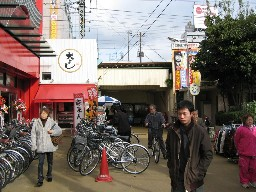
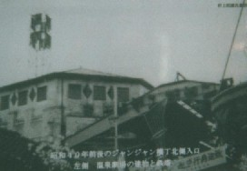
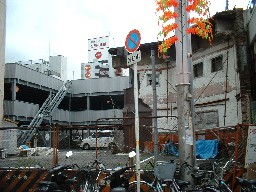

（４1）ブーマン由来記
|
麻雀はさまざまなルールで遊ばれている。その中で、俗にブー麻雀、あるいはブーマンと呼ばれるいうゲーム法も、関西を中心にしてかなり普及している。今回は、そのブー麻雀の話し。
明治末期、大阪市浪速区の一角に新世界と呼ばれる娯楽施設や飲食店を集めたような地帯ができた。
（じゃんじゃん横丁展示パネルより。以下同）
これが↓、当時の新世界への入り口。
通天閣も、新世界のシンボルとしてその頃完成した。
こっち↓が現在の通天閣（戦後、再建されたもの）

この新世界の一角に「じゃんじゃん横丁」と呼ばれる長さ200Ｍ、道幅３Ｍほどの横丁がある。

地下鉄「動物園前駅（イラストの一番下、四角い建物がポツンと描かれているのが「動物園前駅」）。その向こう側に、２両連結の電車が走っているのが関西線。関西線の動物園前駅を降りてスパワールド（ピンク色の大きな建物）の正面玄関前を通り越し、スパワールの北西角を北に曲がると、関西線のガード↓がある。（上の地図はイラスト仕様のため、関西線とスパワールドの位置関係がちと不正確）

この関西線のガードを北方面へくぐり抜けると、じゃんじゃん横丁の南側入口前にでる。じゃんじゃん横丁はここから北へ200Mほどのびている。
この写真のすぐ右側、南入口の突端にあるのが、和光というブー雀荘（上記写真では、建物の右側面しか映っていない）。いや、いきなりブー雀荘がお出迎えとは、まことにじゃんじゃん横丁の名前にふさわしい。しかしこのじゃんじゃん横丁という通称、いかにもマージャンとの関係を連想させるが、実は麻雀とはまったく関係がない。この横丁は、雀荘など一軒もない頃から、じゃんじゃん横丁と呼ばれていた。
いまでもそうであるが、この横丁の両側には戦前から多くの飲食店、居酒屋が軒を連ねていた。その酔客相手に多くの流しの三味線やギター弾きがいた。この三味線やギター弾きは、店内で三味線やギターを弾きながら、お客の要望で唄ったり伴奏をしたりする。夜ともなれば、あちこちの居酒屋から三味線やギターの音が流れ、人通りも多く、大変にぎやかであったという。その音が夜通しじゃんじゃんと響き渡る。そこでじゃんじゃん横丁と通称されるようになったものである。
昭和13年頃のじゃんじゃん横丁
（じゃんじゃん横丁展示パネルより）
現在のじゃんじゃん横丁
むかしこの横丁の北詰めの東側に温泉劇場という会館があった。温泉、すなわち風呂屋である。風呂屋といっても鉄筋２階建て。演劇施設も備えた、現在で云うスーパー銭湯みたいなものである。この温泉劇場が、ブー麻雀の発火点である。
昭和40年頃の温泉劇場

（じゃんじゃん横丁展示パネルより）
現在でもスーパー銭湯は大人気であるが、当時も同じこと。そこで温泉劇場は温泉会館とも呼ばれ、大変にぎわったという。しかし戦争によって営業中止となりそのまま終戦を迎えた。しかしせっかくの良い場所。そこでこの場所で麻雀荘が営業されることになった。麻雀荘の名前は、そのまま温泉会館とした。残念ながら、このときのオーナーの名前は、ちと不明。そこで仮りにX氏としておく。
麻雀荘といっても、温泉の浴場や脱衣場部分を改装した部分を店舗としたので、面積が広い。そこで卓数も40と、当時、最大の麻雀荘となった。これほどの雀荘となれば、何人かの従業員、今で云うメンバーが必要となる。メンバーは当初７人であったというが、この７人のうち店長格であったのが室永文三（むろながぶんぞう）という人物。
ブー麻雀を誰が考案したかということは、まったく不明である。このあたりは背後に飛田遊郭とか釜が崎という地帯を抱えている。そこで一説に、そういう人の中から速戦即決を求めて生まれたという。また一説には、その地区に多い韓国・朝鮮系の人が始めたのが最初という。しかし真相は不明である。
いずれにせよ温泉会館がブー雀荘として開業した昭和24年には、すでにブー雀荘が何軒か存在したことは確かなようである。じっさい室永氏自身もプレーヤーであった。しかしブー麻雀は流行の兆しはあったものの、まだマイナーな存在であった。またマイナーな存在であるだけに、店によってルールはマチマチであった。しかし電気製品の標準規格ではないが、大規模店のルールは事実上の標準となる。つまり温泉会館によって、ブールールは確立整備された。
ブー麻雀の基本ルールは二十二(アルシーアル)麻雀であった。しかし戦前主流であったこの二十二麻雀は、アガリ役も少なく、得点力も弱い。
門前ツモ・ピンフ・タンヤオ・海底ツモ・搶槓・嶺上開花・翻牌が一翻役なのは当然としても、対々・ホンイツ・混老・チャンタ・三暗刻・小三元・一通も一翻役。三翻役として清一色があるだだけであった（あとは天和・地和・大三元・四喜和・字一色・清老頭・四暗刻・国士無双・九連宝燈の役満）。
アガリ役が少ないので、スピード感もサスペンス性も薄い。またゲーム途中で箱割れや２千点プラスが生じることはない。そこでサンシキやイーペーコー、あるいはリーチなどの新一翻役がどんどん取り入れられた。これによって、たとえばリーチ・タンヤオ・イーペーコーをツモアガリすれば、一発でブーという大きなアガリが出るようになった。※この新役（サンシキやイーペーコー）が一般のリーチルールにも波及し、今日の姿となった。また現在、対々・混一・混老頭、チャンタ・三暗刻・小三元などは、両翻であるが、これは世のインフレ化にともなう変革。
現在 ブーマンでは、Ａトップ（１人プラス)とＢトップで（２人プラス）では１人当たりの支払い額に差がある。これが最初からそうであったのか、当初はＡトップでもＢトップでもに１人当たりの支払い額は同じであったかについては判然としない。いずれにせよ、ゲーム途中で終了するとなれば、誰がどの程度プラスしているかハッキリ分かるようにしておく必要がある。そこでプラス点は卓上に明示するようになった。
また射倖性を増幅するため、ドラが考案された。当初は１枚一翻ではなく、ロンアガリ百符加算であった（ツモアガリは百符オール）。百符加算という懸賞がつくので、当初は懸賞牌と呼ばれていた。二千点持ちの麻雀なので、ロンアガリで加算される百符はその20分の１。現在の三万点持ちの一般麻雀に換算すると、１枚1500点ぐらいの価値であった。
当初 ドラはアガッてから現在の嶺上牌にあたる牌をめくっていた。槓で嶺上牌がツモられてしまえば、その次の牌をめくっていた。やがて「槓があるたびドラの変わるのは」ということで、槓が４回 あっても大丈夫な現在の位置に移動した。それとともに、現在のように１枚一翻に変化していった。しかしそれは世のインフレ化の流れであって、別にブー麻雀のせいはでない。※麻雀ライターなぎひろゆき氏によれば、１枚一翻式のドラを提案したのは、当時ブー雀荘へ通っていた関西大学の学生らしいという（月刊近代麻雀S59/8「実録秘話・私がドラを発明した」）。
現在、ドラをケン牌と呼ぶことがある。ケン牌は懸賞牌の略で懸牌（けんパイ）と書く。※現在のブー雀荘では射幸性をさらに増幅するため、赤ドラも導入されている（赤ドラの由来については、ココを参照してください）。しかしまだ赤ドラが登場していない時代（昭和40年代）、一部のブー雀荘では両(リャン)ケンルールを用いていた。両ケンは両懸、すなわち最初からドラを２枚めくる。要するにギャンブル性アップのため考案されたルールである。※昭和40年代後半（1970年頃）、名古屋市港区の一部ブー雀荘でも、両ケンが採用されていた。
またドラは芸者とも呼ばれた。これは最初のころ王牌の最後の牌（嶺上牌）、すなわち裾をめくっていたことから来ている（芸者は左褄（ひだりづま）をとるので）。※現在、ローカルルールにアリスというルールがある。これはリーチアガリしたあと、ドラの次牌（槓ドラに相当する場所の牌）をめくり、手牌に同一牌があるとチップ（懸賞金）をゲットできるというルール。これは当初のブー麻雀の懸賞牌ルールを踏襲しているといえる。
温泉会館での一定の賭け金は１ゲーム百円であった。この百円は、ゲーム前に毎回各人より集めた。そして１ゲーム終了するごとに、ゲーム代として百円を差し引いた残り三百円をタバコに替え、賞品としてトップ者に渡した。賞品のタバコ（当時、高級タバコであったピースが使われたという）は、お客が帰るとき、同価格で買い戻した。最初から現金で精算せず、タバコを賞品として使ったのは、もちろん法律上の問題からである。
１ゲーム１人百円は、当時の物価からいえば かなり高額であった。しかしゲーム代のとりはぐれがない、お客同士のトラブルはない、収益性は高いなど一石三鳥のシステムであった。またトップ者にとっても、差し引き二百円のプラスというのは大きな収入であった。
こうして温泉会館という大規模なブー雀荘が登場し、人気を博すことによってブー麻雀は一気に広まった。じっさい温泉会館が大盛況となったあと、じゃんじゃん横丁 およびその周辺には、雀満（南陽）、太陽麻雀クラブ、通天閣クラブ、新南陽、和光、三共などが次々と開店し、ブー麻雀のメッカとなった。その意味で、温泉会館はブー麻雀の発火点であると同時に、発祥の地と呼んでも過言ではない。
昭和30年ころのじゃんじゃん横丁。左側に見える「麻雀」店は雀満（南陽）
（じゃんじゃん横丁展示パネルより）
こうして新世界＝温泉会館を発火点としてブー麻雀はどんどん普及していった。そこで当初は新世界ルールと呼ばれた。またタバコを賞品に使ったので、賞品麻雀とも呼ばれた。現在でもブー麻雀を賞品麻雀と呼ぶことがあるのは、このためである。またブー麻雀はスポーツ麻雀と呼ばれた。しかしこのスポーツ麻雀という呼称は、すでにそれ以前から存在していた。
ブー麻雀は二十二麻雀であったが、この二十二麻雀は日本麻雀連盟という団体（略称、日雀連）の基本ルールである。その日雀連では、自分たちの麻雀を“賭けない健全なスポーツ的麻雀”という主旨で、むかしからスポーツ麻雀と称していた。しかしブー麻雀のいうスポーツ麻雀は、速戦即決でスポーツ的というイメージでスポーツ麻雀と呼んだものである。現在でも日雀連では、自分たちの麻雀をスポーツ麻雀と呼称している。しかし世の中ではスポーツ麻雀といえばブー麻雀の代名詞というイメージのほうが強いようである。
いずれにせよ、さまざまな呼び名を持つ速戦即決麻雀であるが、なんと云ってもブー麻雀という呼称が圧倒的にメジャーである。しかしこの名称の由来は判然としない。ブー麻雀ルールは、堅苦しくいうと大阪府麻雀協同組合制定Ｂルールという。そこで一説に、このＢルールがブールールと訛り、やがてブー麻雀となったという。
また一説には符麻雀（ふマージャン）がなまってプー麻雀と呼ばれようにったともいう。※ブー麻雀は二十二麻雀が基本。二十二麻雀では得点は240符とか360符となる。当時、一般ではすでにリーチ麻雀が流行りはじめていた。一般リーチ麻雀では得点がインフレ化しているので、得点は千点、２千点となる。そこで「千点、２千点式のリーチ麻雀ではなく、240符、360符というように“符で数える麻雀”」と言う主旨で符麻雀と呼んだというもの。
また一説には、“ハコワレ等で途中で終了するのをブーと表現していたのが、そのまま名称となった”とも云う。いずれにしても、語源はさだかではない。
このように開店以来盛況であった温泉会館も、諸事情により２年ほどで閉店してしまった。原因と言っても判然としないが、当時の社会情勢にくらべてレートが大きすぎ、つぶれる客が増えてしまった。また低レートのライバル店がどんどん出来て、客がそちらに流れてしまったことなどが原因とも云われる。
閉店になった後、メンバーは、交流関係のあった他店に移った。店長格であった室永文三氏には室永四郎という弟がいた。その弟とともに新規にブー雀荘を開店したいという希望者に、自分の経験や人脈を通じて多くの協力をした。そこでブー雀荘経営のエキスパートとして、文さん、文さんと呼ばれて親しまれたという。そして閉店となった温泉会館は、その後、ジャンジャンホールというパチンコ店となった。
また他の店も新陳代謝があり、現在、営業しているのは、通天閣クラブ、新南陽、和光、三共の４店。いずれもブー麻雀、本場の老舗ばかりである。
横丁の東側（右側）の下の方、焦げ茶色の印がいくつかある。これが下から和光、新南陽、通天閣クラブの各雀荘。三共は横丁から少しはずれたところで営業している。この中で通天閣クラブが温泉会館に次ぐ老舗と云われるが、じっさいじゃんじゃん横丁の中で最も大きな店でもある。
現在の通天閣クラブ
現在の新南陽
現在の和光
じゃんじゃん横丁を出たところにある三共
同じくじゃんじゃん横丁を出たところにあるニューマルコ

横丁内にある南陽(旧雀満)はかなり以前に閉店しているが、模様替えされずそのままの状態。※話しによっては賃借できる可能性があるかも？。誰か、本場中の本場で雀荘営業にチャレンジする？
南陽
パチンコ店であるジャンジャンホールは閉店後、長くそのままであった。しかしバブル時代、某大手不動産会社がこの地を買収し、建物は取り壊されて空き地となっている。
横丁の北入口、左側が温泉会館＝ジャンジャンホールのあった場所。
白い壁は、一部、残った温泉会館の壁。

ここには将来、娯楽施設建設の予定という。しかし同不動産会社は、通天閣のすぐ近くに浴場施設もある大規模なレジャービルを建設した。それが地下鉄「(天王寺)動物園前」にそびえるスパワールドである。どうも新世界と浴場施設は、切っても切れない縁があるようだ。
新世界を発火点としたブー麻雀は、主として大阪から中国地方を経由して九州へと、日本の西方面に伝播していった。西日本方面へ伝播したブー麻雀は、多少のバリエーションを生じながらも二十二麻雀が基本であった。
名古屋以東、関東へは、サンシキやイーペーコーの新役、あるいはリーチ・ドラなどの新ルールは伝播しても、ブー麻雀はほとんど伝播しなかった。それでもブースタイルの雀荘は、少しはできた。しかしすでに常時両(リャン)ゾロ付きの切り上げ計算に慣れている関東では、四捨六入計算の二十二ルールはなじみにくい。そこで計算法への抵抗を少なくするため、東京ではシングルゾロの４千点持ちのブー雀荘が登場した。
不思議なことに、ブー麻雀は名古屋を通り越して東京へ伝播した。たぶん名古屋では、貸し卓専門が根付いており、「お一人様歓迎」というフリースタイルの土壌がなかったこと為と思われる。また東京より都市規模が小さいので、ブー雀荘オーナーに魅力が感じられなかった事もあるかもしれない。
その名古屋でブースタイルの雀荘ができたのは、昭和40年代の初め頃。そのころのブースタイルの雀荘でもっとも有名であったのが今池の中京クラブ。オーナーは渡辺という人物。この中京クラブでは、はじめから両(リャン)ゾロ付きの８千点持ちであった。両(リャン)ゾロ付きの８千点持ちとなれば、点数計算は普通のリーチ麻雀と同じで分かりやすい。そこで中京クラブはずいぶん流行った。中京クラブは現在存在しないが、名古屋ではいまでも８千点持ちが主流である。
温泉会館は閉店となったが、X氏には二人の男子があった。二人は上六（うえろく＝上本町（うえほんまち）六丁目なので、上六と呼ばれる）で、それぞれブー雀荘を開店した。兄の店は高レート（マルＡで千円オール、それ以外は５百円の支払い。そこでご・とん(500・1000)と呼ばれていた）、弟の店は低レートであった（マルＡで５百円オール、それ以外は３百円の支払い。そこでさん・ご(300・500)と呼ばれていた）。兄弟の店はそれぞれ流行ったが、兄の店は諸事情により閉店となってしまった。
弟の店は上六交差点の、通称ちろりん村と呼ばれる飲食店街の一角にあった。やがてこのちろりん村は、再開発によって上層階が住宅、下層階が店舗という雑居ビルに生まれ変わった。このビルの名称をハイハイタウンという。弟の店も再開発にともなって、このビルの１Fに移転した。
ハイハイタウン
＃２Fに雀荘があるが、これは別の店。
ハイハイタウンの西横入り口。
この西横入り口を入ると、すぐ左側に温泉会館という名の雀荘がある。これが弟の店。
もちろんここに温泉などない。父が開業し、ブー麻雀の発火点となった温泉会館という由緒ある名称を引き継いでいるだけである。そして弟も亡くなったあと、経営者は何人も交代しており、現在の経営者はX氏とも弟ともまったく関係がない。ただ温泉会館という名前が残っているだけである。そして現在、ブー雀荘なのにどうして温泉会館という名前なのかという由来を知る人も少ない。
PS：室永文三
公務員である室永文太郎氏の三男として、明治34年11月29日、８人兄弟の４番目として生まれた。子供の頃は、父親の転勤に伴い、姫路、明石などを転校しながら成長した。麻雀は昭和２年頃に覚えた。昭和12年頃には通天閣のすぐ近くで料理店経営に携わった。
戦後、縁あって、ブー雀荘の草創に携わったわけであるが、昭和50年６月30日、75才で死去した。現在、大阪天王寺区にある一心寺に葬られている。
http://www.isshinji.or.jp/main1/index.html
|
とも 投稿日：2007/07/21(Sat)
☆南陽 は、現在営業しています
☆レート
700円〜1000円 店によって少しずつ違います
|
あさみ 投稿日：2007/07/21(Sat)
はじめまして、ともさん
「南陽」とは、旧 「雀満」のことですよね。
σ(-_-)が最後に雀々横町を取材したのは“４，５年前”。もちろんそのときは閉店していたのですが、それ以後 開店したわけですか。いや、歴史ある店名復活とは、まことに目出度い。
貴重な情報をありがとうございました。
|